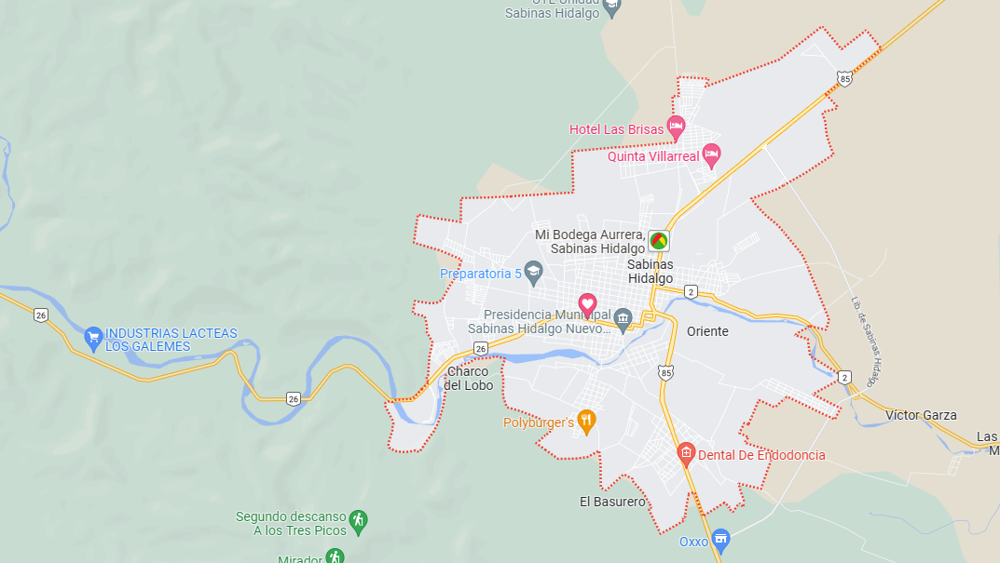

Hola, ¡Bienvenido a mi primer pagina web!, en este sitio proximamente se explicara un poco de la trayectoria de vida
a lo largo de la vida de nuestro usuario Jose Horacio Sepulveda Villarreal
Los primeros pasos, el lugar donde los dio y el sitio que tal vez seria altamente importante para el en algun futuro
el rancho Los Galemes donde crecio toda la etapa temprana de su vida.
Mas adelante pondremos un mapa de la ubicacion del pueblo cercano a ese rancho donde el crecio.
En si esta ubicacion es el pueblo mas cercano a el rancho los galemes, llamado Sabinas Hidalgo, con alrededor de 34,709 habitantes (49.1% hombres y 50.9% mujeres).
en base al sitio web datamexico.org no hay mucho que decir de sabinas hidalgo, mas que tiene varios parques y son de los principales atractivos del pueblo.